A fitted model is only as trustworthy as its assumptions. The Bayesian workflow of Gelman et al. (2020) and Gabry et al. (2019) checks those assumptions by simulating data from the model and comparing it with the data you have:
- A prior predictive check simulates data from the priors alone, before seeing the outcome. Does the model think plausible data looks plausible, or does it expect values that are absurd?
- A posterior predictive check simulates
replicated data
yrepfrom the fitted model. If the model captures the process that generatedy, thenyshould look like a typical draw ofyrep. Systematic differences point to what the model is missing.
A graphical causal model adds a twist to the usual workflow: you can
check it at two levels. Each mechanism (a node given
its parents) can fit well or badly, and the graph as a
whole makes claims - every missing edge implies a conditional
independence - that the data may contradict. Kagu supports both, and
returns replicates in the format the bayesplot package expects, so
you can use its full set of ppc_*() plots.
An example system
We use a small, arbitrary system with four variables. x
and w are root causes; z depends non-linearly
on x; and y depends on z and
w, including an interaction between them.
set.seed(2024)
n <- 150
x <- rnorm(n)
w <- rnorm(n)
z <- sin(2 * x) + 0.5 * x + rnorm(n, sd = 0.3)
y <- 0.8 * z + 0.6 * w + 0.5 * z * w + rnorm(n, sd = 0.4)
d <- data.frame(x, w, z, y)
dag <- list(x = c(), w = c(), z = "x", y = c("z", "w"))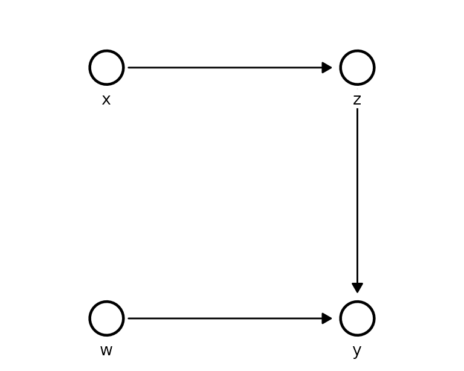
Prior predictive checks
Each Kagu node is a Gaussian process whose behaviour is controlled by three hyperparameters, all on the standardised scale (each variable centred and scaled to unit sd before fitting):
- a lengthscale per parent - how far the parent must move before the function changes (small = wiggly);
- a signal sd - how much the function varies;
- a noise sd - how much the node scatters around the function.
Kagu fits these by optimisation, but optimisation implies a prior: by
default the search is confined to a wide box, which is the same as a
log-uniform prior over that box. gp_prior() makes it
explicit:
gp_prior()
#> <kagu_gp_prior> (standardised scale)
#> lengthscale loguniform(lower = 0.04979, upper = 54.6)
#> signal_sd loguniform(lower = 0.1353, upper = 7.389)
#> noise_sd loguniform(lower = 0.04979, upper = 2.718)
#> root_mean normal(mean = 0, sd = 1)
#> root_sd lognormal(meanlog = 0, sdlog = 0.5)What does the default prior believe?
Priors on hyperparameters are hard to judge directly. It is much
easier to look at what they imply for the data. First, draw
functions for z against x from the prior, and
overlay the observed data:
prior_model <- KaguModel$new(dag)
plot_functions <- function(draws, title) {
ggplot(draws, aes(parent_value, value, group = draw)) +
geom_line(colour = "#26a69a", alpha = 0.35) +
geom_point(data = d, aes(x, z), inherit.aes = FALSE, size = 0.7) +
labs(x = "x", y = "z", title = title) +
theme_minimal()
}
plot_functions(
prior_model$function_draws("z", "x", ndraws = 40, prior = TRUE, data = d),
"Prior function draws: default prior"
)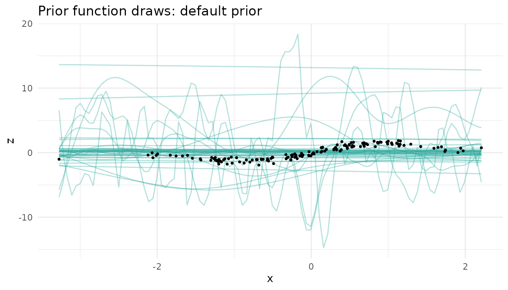
The default prior is happy with functions that swing many times the
range of the data, and with ones that oscillate over a tiny fraction of
x. Next, simulate whole datasets from the prior,
ancestrally through the graph, and compare them with the observed
y:
pr_default <- prior_model$prior_predictive(d, ndraws = 100)
bayesplot_grid(
ppc_dens_overlay(pr_default$y("y"), pr_default$yrep("y")[1:50, ]),
ppc_stat(pr_default$y("y"), pr_default$yrep("y"), stat = "sd"),
grid_args = list(ncol = 2)
)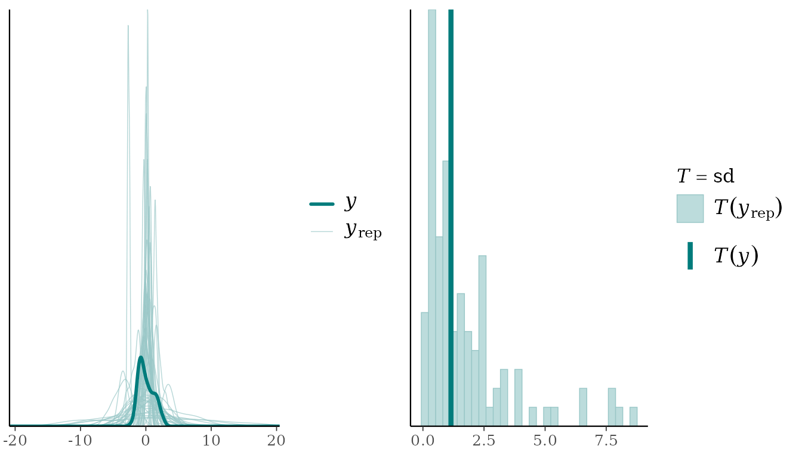
The prior predictive spread of y ranges over more than
an order of magnitude (sd from 0.08 to 8.6, against an observed 1.15).
This prior is not “uninformative” - it actively favours data far more
extreme than anything we would expect.
Note that the priors live on the standardised scale, so each variable’s location and scale are anchored to the observed data (as in rstanarm’s autoscaling). The prior predictive check is therefore about shape, spread and smoothness, not about where the data are centred.
A weakly informative prior
On the standardised scale, sensible defaults are easy to reason about:
-
lengthscale = prior_lognormal(0, 0.5)- functions change over roughly 0.4 to 2.7 sd of a parent: smooth, but able to bend; -
signal_sd = prior_halfnormal(1)- the function varies on the scale of the data, not ten times it; -
noise_sd = prior_halfnormal(0.5)- the noise is at most around the scale of the data.
wi_prior <- gp_prior(
lengthscale = prior_lognormal(0, 0.5),
signal_sd = prior_halfnormal(1),
noise_sd = prior_halfnormal(0.5)
)
wi_mechanism <- GPMechanism$new(prior = wi_prior)
wi_mechanism$hyper # a non-default prior is fitted by MAP, so it is actually used
#> [1] "map"
wi_model <- KaguModel$new(dag, default_mechanism = wi_mechanism)
plot_functions(
wi_model$function_draws("z", "x", ndraws = 40, prior = TRUE, data = d),
"Prior function draws: weakly informative prior"
)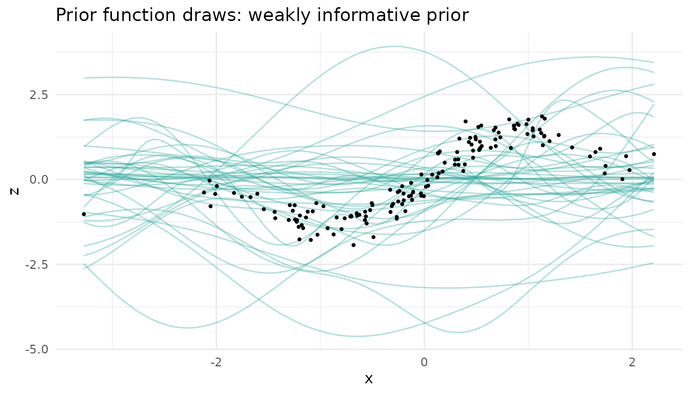
pr_wi <- wi_model$prior_predictive(d, ndraws = 100)
bayesplot_grid(
ppc_dens_overlay(pr_wi$y("y"), pr_wi$yrep("y")[1:50, ]),
ppc_stat(pr_wi$y("y"), pr_wi$yrep("y"), stat = "sd"),
grid_args = list(ncol = 2)
)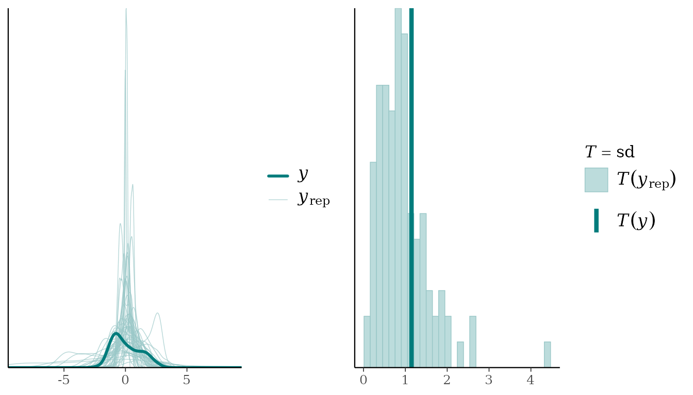
The prior predictive datasets now sit on the same scale as the data, while still allowing a wide range of shapes. The observed data look like one plausible draw.
Does the choice matter?
With 150 observations the data dominate either prior. Fitting both models and comparing a causal effect is a quick sensitivity check:
default_model <- KaguModel$new(dag)
default_model$fit(d)
wi_model$fit(d)
rbind(
cbind(prior = "default (ML)", default_model$effects("x", "y", hdi = 0.95)$summary()),
cbind(prior = "weakly informative (MAP)", wi_model$effects("x", "y", hdi = 0.95)$summary())
)[, c("prior", "mean", "hdi_lower", "hdi_upper")]
#> prior mean hdi_lower hdi_upper
#> 1 default (ML) 2.514723 2.015332 3.107309
#> 2 weakly informative (MAP) 2.579754 2.154849 3.075798The estimates barely move, so the conclusions are not an artefact of
the prior. With less data, or more parents per node, the weakly
informative prior matters more: it keeps the fit from chasing noise. We
use wi_model from here on.
Posterior predictive checks
Checking each mechanism
type = "conditional" (the default) simulates every node
given its observed parents, so it checks each mechanism on its
own:
pc <- wi_model$posterior_predictive(ndraws = 100)
pc
#> <PredictiveResult [conditional]: 4 nodes, 100 replicated datasets of n = 150>
#> Use $y(node) / $yrep(node) with bayesplot::ppc_*(), or $summary().
bayesplot_grid(
ppc_dens_overlay(pc$y("z"), pc$yrep("z")[1:50, ]) + ggtitle("z | x"),
ppc_dens_overlay(pc$y("y"), pc$yrep("y")[1:50, ]) + ggtitle("y | z, w"),
grid_args = list(ncol = 2)
)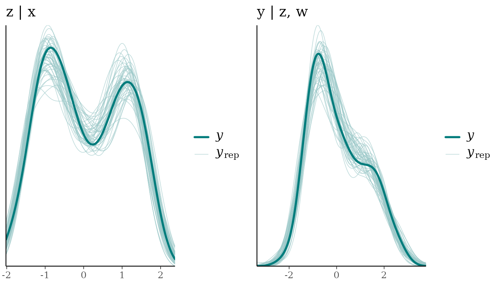
The replicated densities (light) surround the observed one (dark).
Summary statistics give the same check numerically: p_value
is the share of replicated datasets whose statistic is at least the
observed one, so values near 0 or 1 signal a mismatch.
pc$summary(stats = c("mean", "sd", "min", "max"), nodes = c("z", "y"))
#> # A tibble: 8 × 7
#> node stat observed rep_mean rep_lower rep_upper p_value
#> <chr> <chr> <dbl> <dbl> <dbl> <dbl> <dbl>
#> 1 z mean 0.0418 0.0401 -0.0109 0.100 0.47
#> 2 z sd 1.05 1.05 1.00 1.10 0.53
#> 3 z min -1.93 -1.81 -2.01 -1.62 0.84
#> 4 z max 1.86 2.01 1.77 2.34 0.79
#> 5 y mean 0.0570 0.0569 -0.00730 0.126 0.49
#> 6 y sd 1.15 1.15 1.09 1.23 0.46
#> 7 y min -2.27 -2.19 -2.67 -1.83 0.63
#> 8 y max 2.69 2.97 2.58 3.36 0.89These posterior predictive p-values are not classical p-values: they are not uniform even when the model is right (they cluster around 0.5), so treat them as a descriptive flag rather than a test.
Checks that target the structure
A density overlay is a blunt instrument. Gabry et al. (2019)
recommend choosing checks that probe what the model could plausibly get
wrong, and in a causal graph the parents of each node tell you where to
look. Here, y should move with w. Plotting the
observed y against w, with the replicated
intervals, checks exactly that:
ppc_intervals(pc$y("y"), pc$yrep("y"), x = d$w) +
labs(x = "w", y = "y", title = "y against w: observed (dark) vs replicated intervals")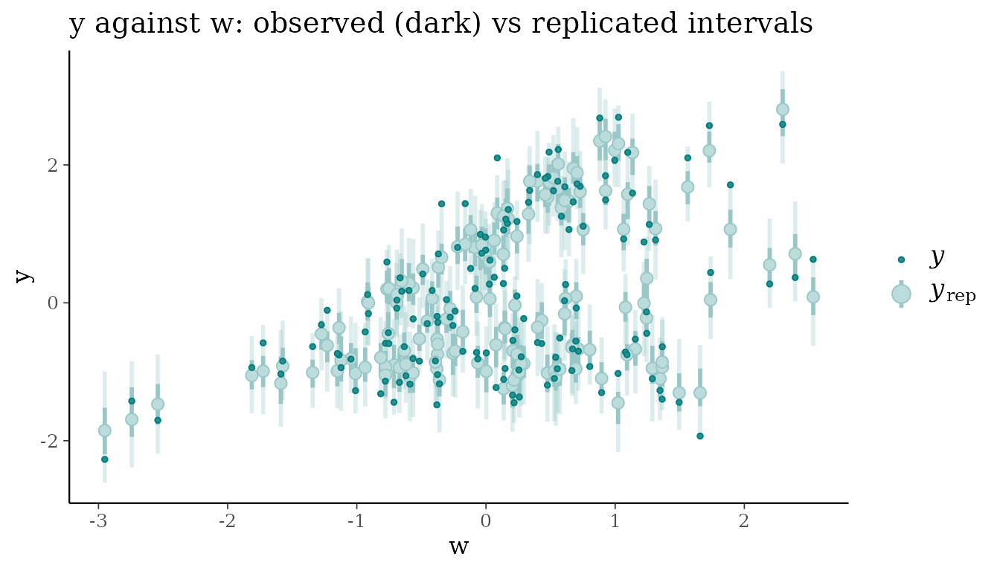
Equivalently, split the data by w and compare the mean
of y within each group:
w_group <- cut(d$w, quantile(d$w, 0:3 / 3), include.lowest = TRUE,
labels = c("low w", "mid w", "high w"))
ppc_stat_grouped(pc$y("y"), pc$yrep("y"), group = w_group, stat = "mean")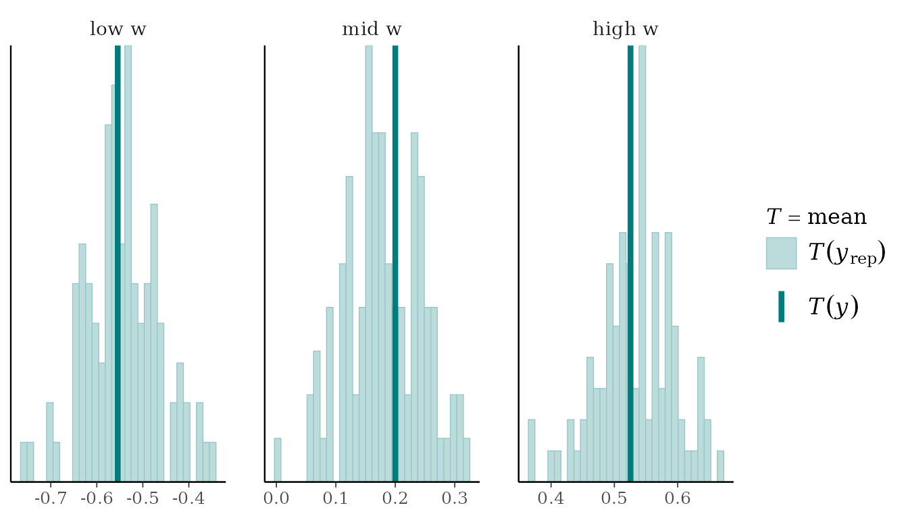
Checking the graph as a whole
type = "joint" instead simulates the whole graph from
the fitted model: root nodes from their marginals, every other node from
its mechanism given its simulated parents. Each replicated
dataset then carries every dependence the DAG implies, so we can compare
the correlation of every pair of variables with what the model
reproduces:
pj <- wi_model$posterior_predictive(ndraws = 100, type = "joint")
pj$plot_cor(prob = 0.95)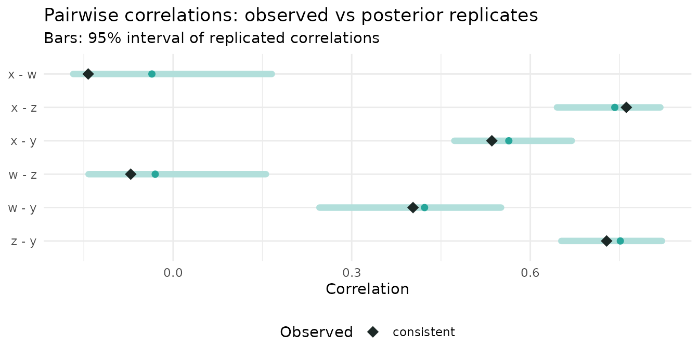
Every pair lies within its replicated range.
Catching a misspecified model
Now suppose we had drawn the graph without the w -> y
edge:
dag_bad <- list(x = c(), w = c(), z = "x", y = "z")
bad_model <- KaguModel$new(dag_bad, default_mechanism = GPMechanism$new(prior = wi_prior))
bad_model$fit(d)
pc_bad <- bad_model$posterior_predictive(ndraws = 100)The standard marginal checks of y look fine. The missing
influence of w is simply absorbed into a larger noise term,
so the overall distribution is still reproduced:
ppc_dens_overlay(pc_bad$y("y"), pc_bad$yrep("y")[1:50, ])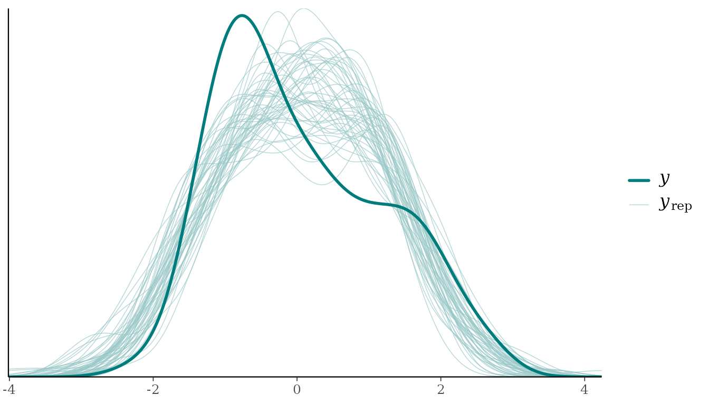
pc_bad$summary(nodes = "y")
#> # A tibble: 4 × 7
#> node stat observed rep_mean rep_lower rep_upper p_value
#> <chr> <chr> <dbl> <dbl> <dbl> <dbl> <dbl>
#> 1 y mean 0.0570 0.0533 -0.106 0.187 0.48
#> 2 y sd 1.15 1.15 1.04 1.30 0.46
#> 3 y min -2.27 -2.76 -3.37 -2.23 0.08
#> 4 y max 2.69 2.79 2.18 3.50 0.6A model can pass every one of these checks and still be wrong. The
structural checks, however, fail clearly. The replicated y
no longer changes with w, while the observed y
does:
ppc_intervals(pc_bad$y("y"), pc_bad$yrep("y"), x = d$w) +
labs(x = "w", y = "y", title = "Misspecified model: y against w")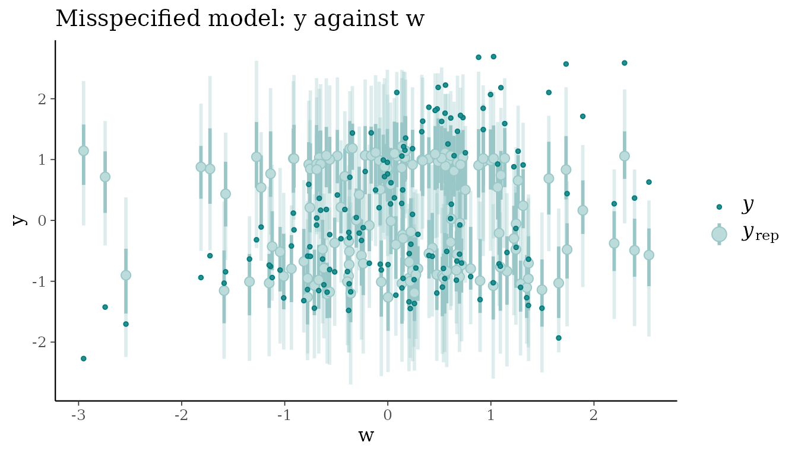
ppc_stat_grouped(pc_bad$y("y"), pc_bad$yrep("y"), group = w_group, stat = "mean")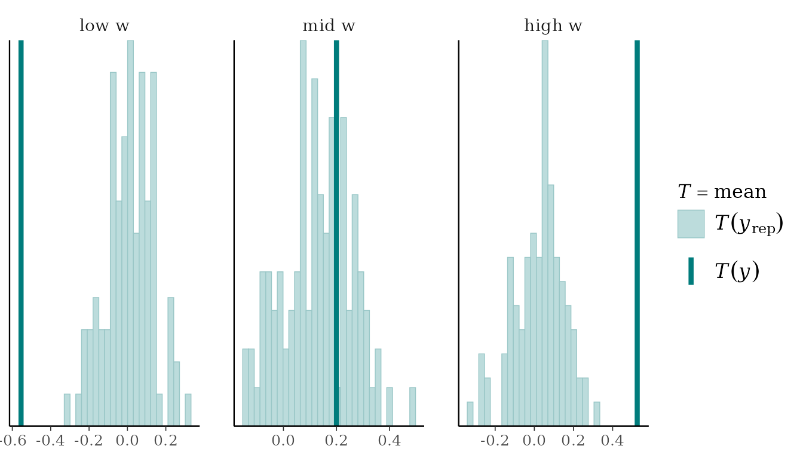
The graph-level check finds the same problem without our having to
guess where to look. The DAG claims w and y
are independent, the replicated data obey that claim, and the observed
data do not:
pj_bad <- bad_model$posterior_predictive(ndraws = 100, type = "joint")
pj_bad$plot_cor(prob = 0.95)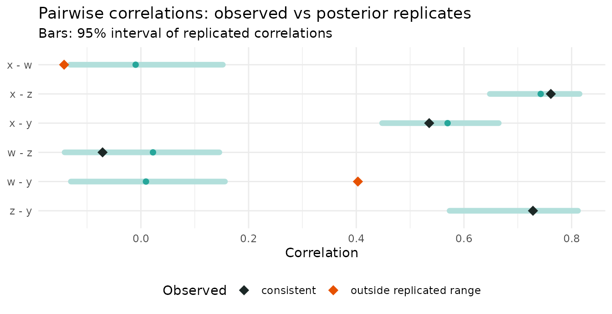
The observed correlation between w and y is
0.4, against a replicated 95% range of -0.13 to 0.16. Every missing edge
in a DAG is a testable claim of (conditional) independence, and joint
replicates are a direct way to test those claims.
Checking versus discovery
Kagu’s structure discovery (vignette("discovery")) also
judges graphs, but it answers a relative question: which of the
candidate DAGs is best supported? Predictive checks answer an
absolute one: is this model adequate? The two are
complementary. Discovery can confidently prefer the best of a set of
candidates that are all wrong, and only a check against the data will
reveal it.
Summary
-
Before fitting, check the prior:
$function_draws(prior = TRUE)and$prior_predictive(). Replace the vague default with a weakly informativegp_prior()if it implies implausible data. -
After fitting, check each mechanism with
$posterior_predictive(type = "conditional"). Go beyond density overlays: plot each node against its parents, and use statistics that target what could be wrong. -
Check the graph with
$posterior_predictive(type = "joint")and$plot_cor(), which tests the independences the DAG implies.
Two caveats apply. Kagu’s hyperparameters are point estimates, so the replicates do not include hyperparameter uncertainty and can be slightly too narrow. And posterior predictive checks use the data twice (once to fit, once to check), which makes them conservative: they are good at revealing gross misfit, less so at subtle problems.
References
- Gabry, J., Simpson, D., Vehtari, A., Betancourt, M. & Gelman, A. (2019). Visualization in Bayesian workflow. Journal of the Royal Statistical Society: Series A, 182(2), 389-402. https://doi.org/10.1111/rssa.12378
- Gelman, A., Meng, X.-L. & Stern, H. (1996). Posterior predictive assessment of model fitness via realized discrepancies. Statistica Sinica, 6, 733-807.
- Gelman, A., Vehtari, A., Simpson, D., et al. (2020). Bayesian workflow. https://arxiv.org/abs/2011.01808